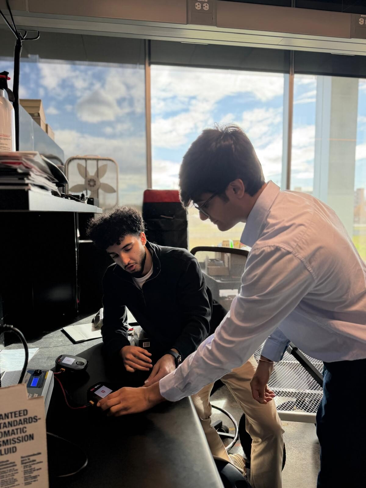

One project. One mentor. One mentee. One semester at a time.
The structure is intentionally simple so it can fit around Senior Design, co-op rotations, and individual student availability.
A one-semester learning experience.
Apply
Share your interests, background, availability, and what you hope to learn.
Get matched
Matches are considered based on discipline, project fit, technical interests, schedules, and mentor availability.
Join the project environment
Attend appropriate meetings or working sessions, ask questions, and learn the project's technical context.
Contribute and reflect
Complete appropriately scoped project contributions plus mid-semester and end-of-semester reflections.


Mentor for one or two semesters — your choice.
Submit your project
Any Senior Design student may express interest in mentoring unless project-specific circumstances make participation inappropriate.
Meet a potential mentee
A prospective match is based on availability and project fit. Mentee interviews may be part of the process.
Mentor one student
You are the mentee's primary point of contact. Only one mentee may be assigned to a mentor at a time.
Decide about the next semester
Because mentees may rotate with co-op schedules, a different student can join in the second semester. You are not obligated to mentor again.
How the 75-hour experience fits.
The program is a pre-approved University Honors Experience. Honors students completing it for credit are responsible for meeting the applicable 75-hour requirement and reflection expectations.
Mentoring activity that can contribute
- Direct conversations and technical guidance with the mentee
- Explaining project activity while the mentee shadows a working session
- Reviewing and discussing mentee documentation or technical work
- Preparing appropriate learning or project tasks
- Interviewing potential mentees
- Mentorship-related reflection and program responsibilities
What does not automatically count
Ordinary Senior Design work completed independently does not become mentoring time simply because the student is enrolled as a mentor.
For example, independently coding, building, analyzing, testing, or writing for the Senior Design course is still Senior Design work unless the activity also includes a genuine mentoring component.
Applications create a pool — not a guarantee.
Project fit
Technical interests and discipline should reasonably align with the Senior Design project.
Schedule fit
Class schedules, project work sessions, and co-op rotations affect whether a workable match can be made.
Availability
A mentor needs an available mentee, and a mentee needs an available project. Not every application will immediately result in placement.
Check in halfway. Reflect at the end.
Active participants will complete a mid-semester reflection and an end-of-semester reflection. The reflections are intended to document learning, identify what is working, address problems early, and capture what each participant gained from the experience.
The reflection forms will be shared directly with active participants.
applications remain open while suitable matches are available.
Ready to participate?
Choose the form that matches your role.